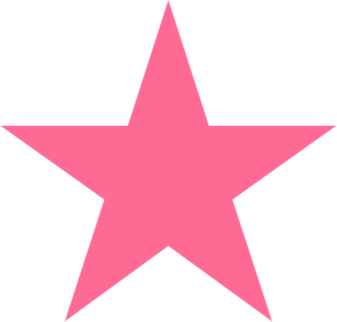

Neen
Indie pop weaving human complexity with the organic world.


Book a 30-minute call with me

CalendarWrite to me directly
MailLet's talk identity.
For artists and brands who want to clarify their intentions and find their deep identity.
Indie pop weaving human complexity with the organic world.
NEEN is an indie-pop artist whose songwriting explores the complexity of human emotions through metaphors drawn from nature. Her music combines organic textures, reverb-soaked guitars and swirling melodies, creating a sensitive, contemplative world.
The exploration focused on the relationship between the living world and human experience: how nature can express emotions that are difficult to name, and how tenderness and wonder can coexist with complexity. The aim was to develop a visual universe that echoed the organic, poetic sensibility already present in her music.
The creative direction sought to bring this sensibility into a coherent artistic universe, connecting the music with its visual expression. The resulting direction draws on organic references, atmosphere and emotion to support NEEN's identity across the project's existing imagery and applications.
Intimate, electric and unapologetically sensitive alternative pop.
ELIOTT RAY is an alternative-pop artist whose music combines electronic energy with intimate songwriting. His artistic world brings together vulnerability, directness and a distinctive take on masculinity, exploring love, solitude and the feeling of sometimes standing apart from the world.
The exploration centred on the tension between sensitivity and intensity: intimate emotions expressed through electric, frontal music. The challenge was to articulate this complex personality without smoothing out its contradictions, and to create a territory that could feel both raw and carefully considered.
The creative direction developed this tension into a distinctive visual territory, bringing together graphic experimentation, expressive imagery and live performance. The aim was to make the artist's singularity more legible while preserving the energy, vulnerability and unconventional spirit at the heart of the music.
Ultrapop with a cosmovintage soul.
SUZE is an evolving artistic project exploring an ultrapop universe with a strange, playful and cosmovintage sensibility. Its identity is still taking shape, leaving room for experimentation and unexpected visual connections.
The exploration focuses on the contrasts that give SUZE its personality: pop immediacy and otherworldly references, familiar imagery and eccentric details, playful energy and cosmic nostalgia. The intention is to identify the strongest recurring elements without closing down the project's potential too early.
The visual explorations aim to give this emerging universe greater coherence while keeping it open to evolution. Rather than presenting a finished identity, the work establishes creative directions and visual possibilities that can be developed as SUZE's artistic project takes shape.
Contemporary fashion rooted in Tunisian heritage and urban life.
BAALA is a contemporary fashion brand shaped by two cultural influences: Tunisian heritage and urban life in Paris and London. The challenge was to bring these references together in a way that felt natural and contemporary, without reducing cultural heritage to a decorative motif.
The exploration examined how these different influences could coexist within a distinctive fashion identity. The focus was on translating cultural references, materials and attitudes into a visual language that balances rootedness with movement, and craftsmanship with the pace of city life.
The creative direction brings these influences together in a contemporary visual universe. Through the project's existing imagery and identity work, the intention is to express BAALA's dual belonging with confidence: heritage remains present through its meaning and sensibility, rather than becoming folklore.
Danish-inspired minimalism meets the warmth of local craft.
POLLEN is a café concept built around a meeting of sensibilities: Danish-inspired minimalism and the warmth of local, organic materials. Wood and traditional embroidered tablecloths provide a tangible, familiar counterpoint to a clean and understated design language.
The exploration focused on the contrast between restraint and warmth, simplicity and texture. The intention was to combine the clarity of Danish design influences with the character of local materials and traditional details, creating a café identity that feels both considered and welcoming.
The creative direction translates this concept into a coherent identity and design language, balancing minimalist forms with tactile materials and familiar references. Every application shown should reinforce the same idea: a contemporary café experience grounded in material warmth, simplicity and a sense of place.